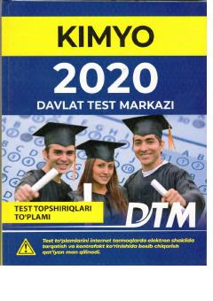

K2Kimyo fanidan 2020-yilgi kirish test sinovlari topshiriqlari toʻplami.
Ushbu qoʻllanma Oʻzbekiston Respublikasi oliy ta'lim muassasalariga kirish test sinovlarida foydalanilgan kimyo fanidan test topshiriqlarini oʻz ichiga oladi. Kitobda shuningdek kelgusi oʻquv yili uchun moʻljallangan yangi shakldagi test namunalari ham keltirilgan. Toʻplam abituriyentlar va oʻqituvchilar uchun tayyorgarlik koʻrishda muhim manba hisoblanadi.